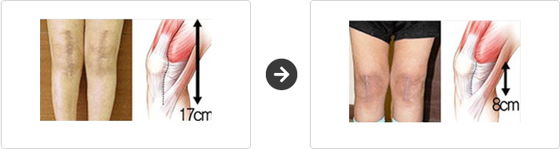
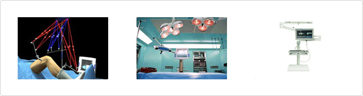
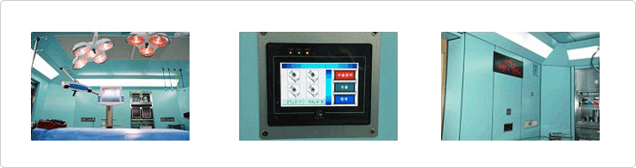
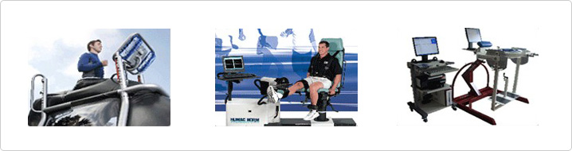

一般的膝盖切开部位大约为15~20cm，但用最小切开术时切开部位只有7~8cm，尽量减少损伤，减少肌肉的损伤和出血量，因此能够快速恢复。

把航海时的导航法运用到了医学上，把患者的关节条件和解剖学资料输入到电脑中进行人工关节手术时，可以正确无误的插入，因此精确度很高。

比起治疗方法，往往因为开刀引起的再次感染，手术出现很多不理想的结果。本院所有的手术室都保持着无菌/清洁状态，可100%防止病菌的侵入。

专业恢复治疗师一同参与手术后康复项目中，在一般的物理治疗恢复方法中引进了帮助恢复正常生活的运动恢复系统，恢复手术后减弱的肌肉功能、使住院患者快速恢复正常的日常生活。
